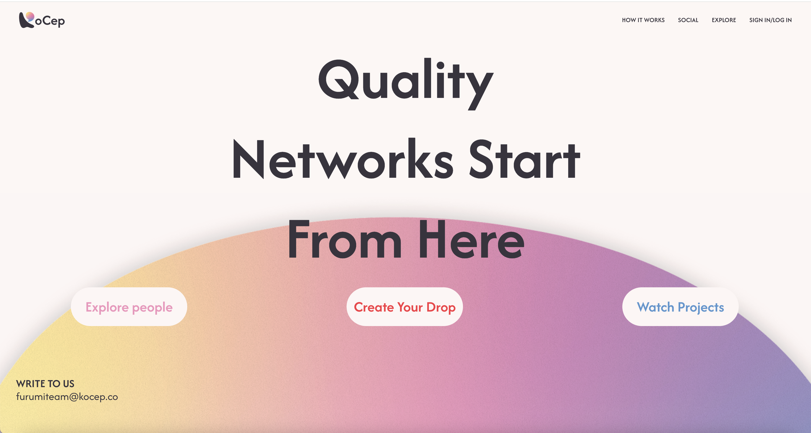
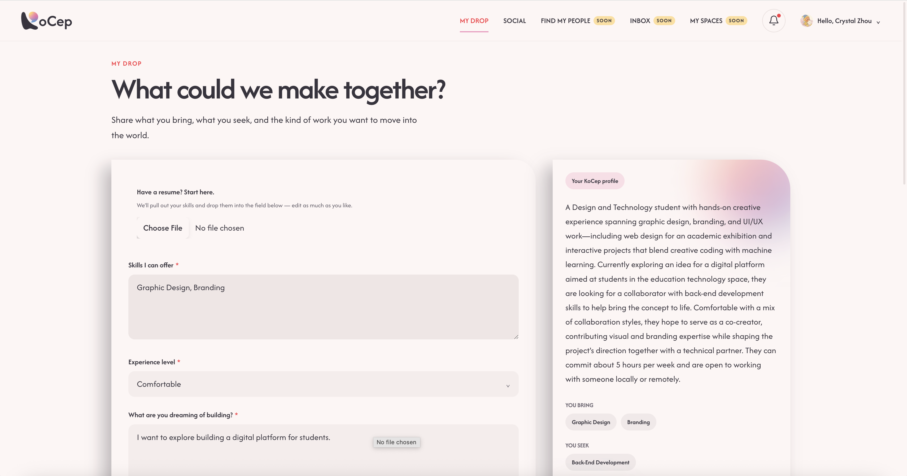
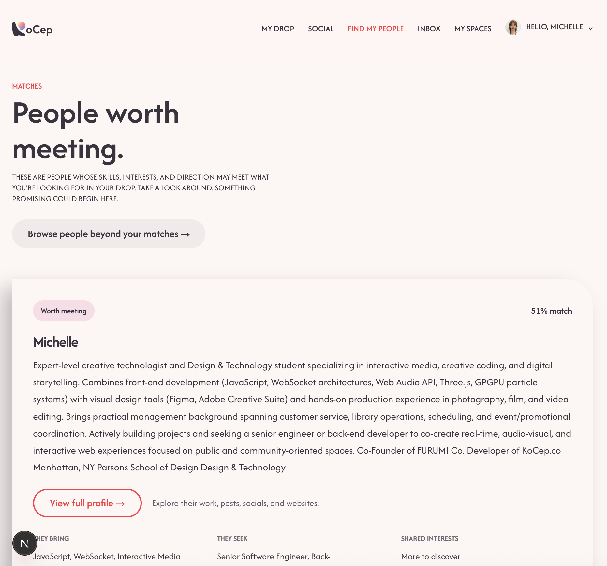
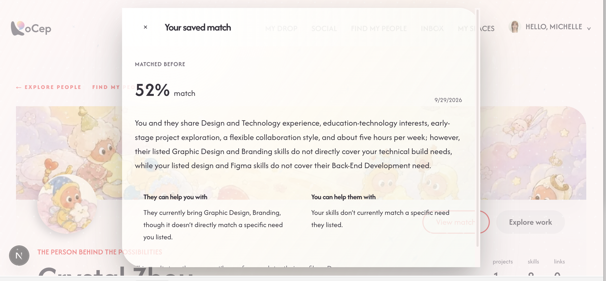
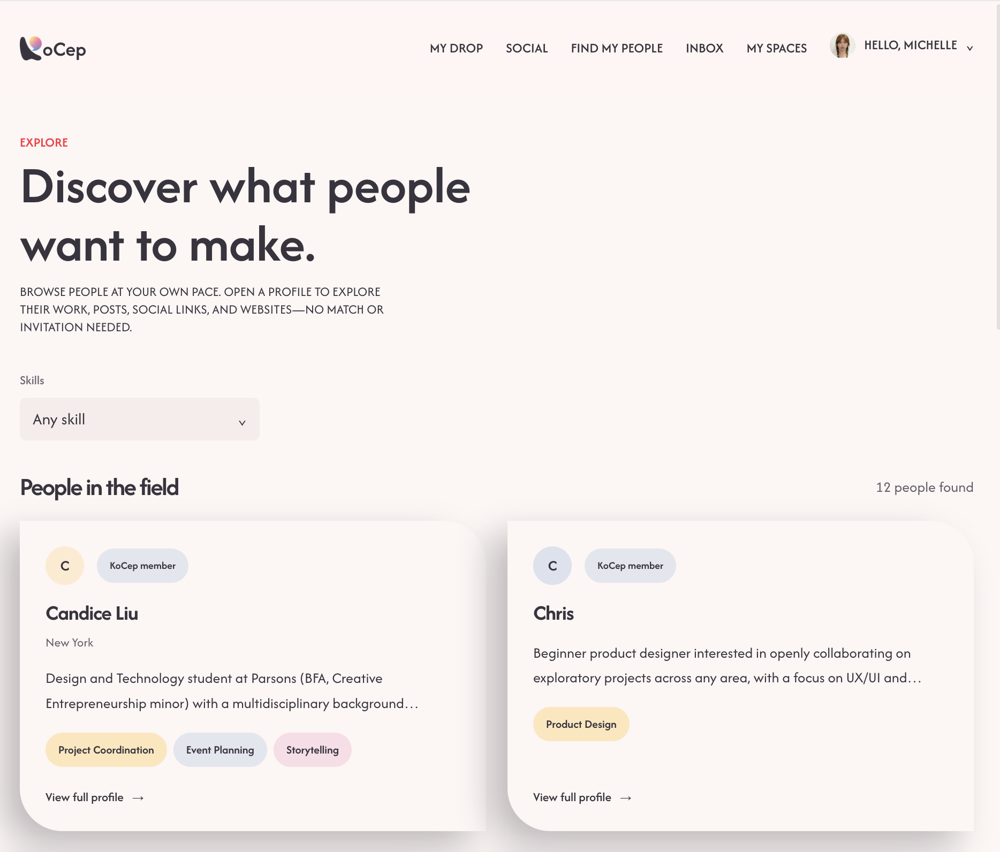

KOCEP
I designed and built key parts of the matching experience, from how users provide the information needed for matching to how the system processes that information and presents potential collaborators.
Product Design / UI·UX / Full-Stack Development

Overview
Kocep is a student collaboration platform designed to help students and creators find people to work with based on what they can offer, what they need, and how they want to collaborate.
The platform explores how finding collaborators can go beyond simply browsing profiles. Kocep uses information such as skills, needs, availability, and collaboration preferences to help surface potentially relevant collaborators.
Kocep is an ongoing collaborative project. This case study focuses specifically on the parts of the matching experience that I contributed to designing and building.
Matching System
I worked on the matching algorithm that connects what users can offer with what other users are looking for. Information provided through the platform is stored in Supabase and used with semantic matching through Voyage AI as part of the matching process.
Potential collaborators are then ranked from highest to lowest compatibility percentage. Instead of only showing a score, the experience also explains why a person was matched, giving users more context before deciding whether they want to view their profile and connect.
The Problem
A list of profiles does not tell users who may be relevant, why they might work well together, or what to do next. Useful recommendations also depend on users first providing enough information about what they offer and need.
Profile Completion Flow
After logging in, users are guided through the information needed for matching, beginning with their profile and continuing into My Drop before reaching Find My People.
If a user returns without completing an important step, the platform encourages them to finish that step first. I designed this flow so users are less likely to reach the matching experience without providing the information the system needs to generate useful recommendations.
After logging in
- Complete profile
- My Drop
- Find My People
Returning with an incomplete step
- Incomplete step detected
- Encourage completion
- Continue
My Drop
My Drop is where users communicate what they can bring to a collaboration and what they are looking for from someone else. This information becomes part of the data used by the matching system, making this step an important connection between profile setup and collaborator discovery.

Find My People
Find My People turns the matching system into an experience users can quickly understand and act on. Potential collaborators are ordered from highest to lowest compatibility, helping users prioritize who they may want to explore first.
Each match also provides context about why that person was recommended. From there, users can view the person's profile and contact/connect with them if they are interested in collaborating.
CompatibilityWho may be most relevant?
TransparencyWhy were we matched?
ActionWhat can I do next?


Iteration / Process
I approached the matching journey as a connected set of design decisions: help users complete the information needed, turn what they offer and need into recommendations, and connect each score to an explanation and a next step.
- Find a match
- See compatibility
- Understand why
- View profile
- Contact / connect
Current Product
Kocep remains an ongoing collaborative project. The current experience brings profile completion, My Drop, and collaborator discovery together; the screens here show the parts of that matching journey I contributed to designing and building.
